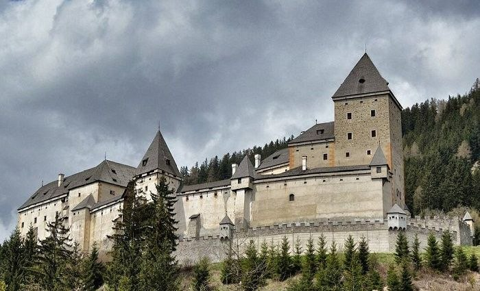
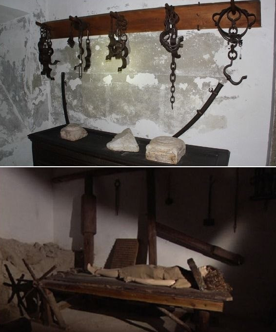
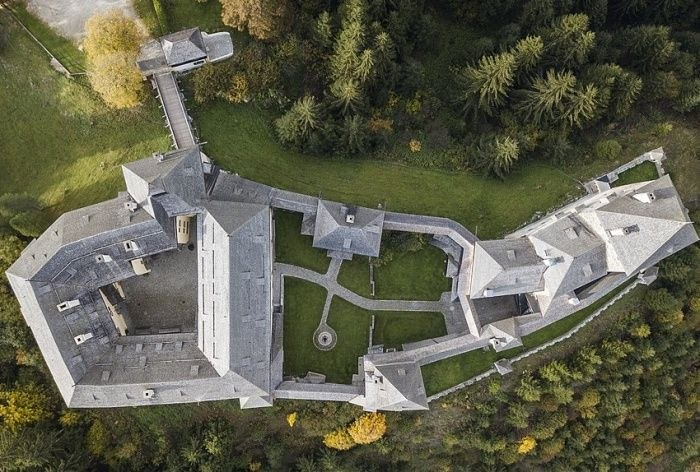

Замок Моосхам (Schloss Moosham), расположенный в живописном регионе Зальцбургского Лунгау в Австрии, широко известен в европейской культуре как «Замок Ведьм». В период самых массовых процессов конца XVII века в местных хрониках и официальных отписках замок именовался не иначе как Zauberschloss («Замок магии»), так как именно здесь концентрировалась вся судебная машина региона Лунгау по выбиванию признаний в участии в шабашах.
Сегодня это место привлекает не только любителей готической архитектуры, но и исследователей паранормальных явлений со всего мира. Крепость находится на холме в долине реки Мур и входит в число крупнейших и наиболее значимых исторических замков земли Зальцбург. Название сооружения произошло от исландского мха (по-немецки Moos), обильно покрывающего окрестные долины.
Информация
- Официальное название: Schloss Moosham
- Исторический статус: Zauberschloss («Замок магии»)
- Год основания: 1208 год
- Первоначальные владельцы: Зальцбургские архиепископы
- Архитектурный стиль: Средневековая крепость с элементами поздней перестройки
- Статус: Частное владение (открыто для экскурсий)
Судилище инквизиции
В XVI–XVII веках замок служил центром дознания по делам о колдовстве. В его казематах перед судом представали сотни обвиняемых — женщины, мужчины и даже бездомные дети. Процессы проходили в эпоху архиепископа Максимилиана Гандафа фон Кенэрга, при котором обвиняемых пытали и сжигали целыми семьями.
История и хронология замка
Первое упоминание
Первое официальное упоминание замка. Крепость была построена по приказу зальцбургских архиепископов на месте более древнего укрепления для контроля торговых путей, сбора налогов и укрепления церковной власти в регионе.
Расширение крепости
Комплекс постепенно расширялся, превращаясь в укрепленную резиденцию местных магистратов (управителей) и административный центр региона.
Пик инквизиции и суды над ведьмами
Самый мрачный период в истории Моосхама. Замок превращается в эпицентр Зальцбургских процессов. Под руководством жестокого баварского судьи Якоба Каспара Губера подземелья замка стали местом изощренных пыток.
Роспуск суда
Архиепископ Иероним фон Коллоредо официально распускает действовавший в замке суд, а административные службы переезжают в другое место. Комплекс постепенно пустеет и приходит в упадок.
Реставрация и современный статус
Полуразрушенные руины выкупает богатый меценат и путешественник граф Иоганн Непомук фон Вильчек. Он проводит масштабную и дорогостоящую реставрацию, вернув замку исторический облик. С тех пор замок находится в частном владении его потомков.

Архитектура и внутреннее устройство
Интересный факт
Первое документальное упоминание о строительстве укрепленной башни, окруженной мощной крепостной стеной (донжон), датируется 1191 годом (это строение сохранилось и до наших дней). Спустя почти сотню лет замок перешёл во владения архиепископов.
Замок состоит из нескольких функциональных зон, представляя собой классическое сочетание суровых оборонительных башен раннего средневековья, внутренних жилых покоев эпохи Возрождения и просторных хозяйственных дворов.
Посетители могут пройти через массивные арочные ворота, осмотреть старинную оружейную палату (арсенал), внутренний барочный двор и парадные залы с мраморными каминами, где выставлены уникальные коллекции произведений искусства, антикварной мебели, гобеленов и охотничьих трофеев.
Особое внимание привлекают мрачные подземелья и казематы, где в первозданном виде воссоздана атмосфера судилищ эпохи Средневековья и сохранились орудия наказания. Из окон верхних этажей открываются панорамные виды на альпийские леса и речную долину.

Охота на ведьм
Исторические архивы подтверждают, что Моосхам был эпицентром масштабных процессов между 1675 и 1690 годами. Перед судом представало огромное количество людей от 10 до 80 лет, обвиненных в наведении порчи. Пытки в подвалах применялись систематически и жестоко.
Оборотни и суды 1830-х
В XIX веке вокруг замка находили растерзанный скот. В судах того времени сохранились показания пастухов, клявшихся под присягой, что видели, как «люди превращаются в зверей под полной луной в развалинах конюшен Моосхама». Хотя причиной были волки, суеверные судьи завели официальные дела о превращение в волков.
Призраки и паранормальное
Персонал и туристы делятся историями о внезапных шорохах, ночных стонах, мольбах о пощаде, ощущениях чужого дыхания и тенистых силуэтах (включая Белую Даму). Документальных подтверждений существования духов нет, но мрачная аура крепости создает идеальную почву для подобных преданий.
Машина репрессий: Архиепископ и главный судья
Эпоха массового психоза и жестокости достигла вершины при правлении зальцбургского архиепископа Максимилиана Гандафа фон Кенэрга. Именно при нем судилище в Моосхаме получило практически неограниченные полномочия.
Главным палачом и вершителем судеб того времени стал баварский чиновник и судья Якоб Каспар Губер. Под его руководством в казематах замка применялись самые жестокие методы допроса. Судья Губер широко практикует концепцию «семейной вины»: обвиненных детей пытали на глазах у родителей, а признания выбивались до тех пор, пока арестованный не называл имена всех своих родственников и соседей. В результате в Моосхаме сжигали целые семьи.
Допросы в замке Моосхам проводились по строгой судебной процедуре того времени, где пытка считалась легальным способом установления истины. В подземельях и казематах замка до сих пор хранятся оригинальные и воссозданные орудия истязаний.
Дыба и растяжение
Применялась скамья для растягивания (Streckbank). Обвиняемого фиксировали и растягивали с помощью ворота, что приводило к разрывам связок и глубоким вывихам суставов.
Тиски для пальцев
Использовались металлические зажимы (Daumenschrauben). Медленным закручиванием винтов допрашиваемым методично раздавливали фаланги и кости на пальцах рук и ног.
Дыба с подвешиванием
При пытке Strappado руки связывали за спиной и поднимали человека на блоке под потолок. Для усиления мучений к ногам подшивали и привязывали тяжелые каменные гири.
Клеймение железом
Применялось процедурное выжигание клейма раскаленным металом (Brandeisen) на плечах или груди как знак ереси перед исполнением смертного приговора.
Отрезание кистей
Перед отправкой на эшафот или висельницу осужденным за особо тяжелые «преступления» и повторное колдовство публично отрубали или отрезали кисти рук.
Ротные расширители
Чтобы обвиняемые не могли произносить «проклятия» или громко кричать, использовались жесткие железные кляпы (Maulsperren) и шейные кандалы-фиксаторы.
Современное состояние локации
В наши дни замок Моосхам функционирует как исторический музей и популярная туристическая достопримечательность, открытая для посещения в рамках экскурсионных программ по определенным зонам.
Объект принадлежит семье Вильчек, которая тщательно оберегает его историческое наследие. Здесь по-прежнему царит атмосфера средневекового рыцарства, гармонично переплетенная с мрачными преданиями о темном прошлом австрийской инквизиции.